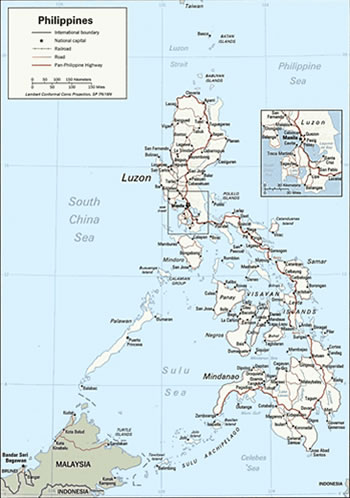
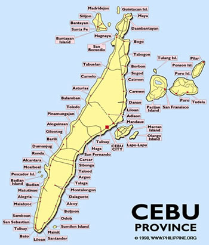

As taught by:
Grandmaster Anciong Bacon
Atty. Jose V. Villasin
and
Teofilo Velez
Prologue: To appreciate Anciong Bacon’s Balintawak eskrima, you have to understand set-ups, anticipation, outwitting through ruses and lures; economy and simplification of motion, sans lavish and squandered movements; effectiveness of strikes bonded with speed, power, elegance and grace. - Sam Buot
Brief History of Eskrima

(Source: Google) |
Most history of eskrima is gathered from oral accounts - passed from generation to generation, sometimes colored by rivalry with other clubs. Further, in a polyglot archipelago like the Philippines, eskrima was known as pagkalikali, panandata, didya, kabaroan, kaliradman and sinawali and arnis or arnis de mano in Luzon. It was also known as eskrima, olisi, garote or baston in the Visayas and kali, kalirongan, kuntao or silat in Mindanao. Pre-Spanish Philippines also called it gilas. The author uses Cebuano terms for forms and techniques. The updated figure from Wikipedia is that the Philippines has is said to have 170 dialects and 12 regional languages belonging to the Austronesian language family. Words and terms vary from province to province. This is explained by the fact that there are 7107 islands spread over the archipelago further broken up by the mountains and natural boundaries. Centuries back, tribes and kingdoms, sometimes warring, further isolated them from each other. There was no national identity until the islands was consolidated by the Spanish invaders. Thus, development of a national language did not happen until the last sixty or so years. Spanish was introduced into the country in 1565 when Conquistador Miguel Lopez de Legazpi founded the first Spanish settlement in Cebu. Spanish began to decline when the islands were ceded to the United States in 1898. This explains the bastardized Spanish words that are incorporated into the Filipino language and into the art of eskrima.
The art is indigenous to the Philippines, developed and practiced for centuries, although until lately, has hardly been known outside the country. It probably started when early Filipinos discovered rattan (a long, tough vine, cut into convenient lengths), could be used as a good striking weapon. Sometimes, Philippine hardwoods bahi’ and kamagong were used, after it was cured and carved into a heavy, hard and sturdy weapon. It is more difficult to find and is expensive, thus the prevalent use of the rattan stick. Eskrima was very popular with the Maharlika or royal blood. It was also practiced by the common folk. It was a game, sport, physical exercise and an art of self-defense.
Besides sticks, bows and arrows, the early Filipinos were experts in bladed weapons. This was especially true in Southern Philippines, which has influence from Indonesia and more remotely from Thailand and Malaysia. The Muslims in Southern Philippines have a remarkable history of victories against foreign invaders, including Spaniards, Americans and Japanese. The .45 caliber pistol was invented to stop the juramentados during the Moro-Rebellion during the Philippine-American War. It was known that the Muslim juramentados were unstoppable with lesser caliber weapons. Bladed weapons include the sundang, baraw, pinuti’, bangkaw, palmenko, daga, kris, laring, kalis, barong, gunong, kampilan, gayang, pita, punyal, itak, banjal, bangkon, lahot and panabas. Of course, the Batanguenos are world famous for their fan knife or balisong, which is an entire art in itself.
ebuanos borrowed the word eskrima from the French word escrime, meaning fencing and from the Spanish word esgrima, meaning swordplay or fencing. This was probably an attempt by 17th and 18th century Filipinos to sound sophisticated by borrowing words from the colonizing European (Spanish) invaders. It was also possible that the Spaniards gave it its name.
When Spain colonized the Philippines, kali or eskrima was already the standard fighting art of the Philippines. Rajah Lapulapu, ruler of Mactan was a kali expert according to Pigafetta, Magellan’s historian and chronicler. According to legend, Lapulapu used eskrima to route the invading Spaniards eventually killing Ferdinand Magellan. This was the first recorded Filipino repulse of foreign invaders. When the Spaniards returned to overcome the Filipinos with their superior firepower, eskrima became a prohibited art in 1596 and 1764. It was totally banned by Don Simon Aredo y Salazar since it was discovered that masters of the art led revolting Filipinos. It was also said that Filipinos were abandoning their farms to practice eskrima. Besides, the practice often led to injury and death. The art went underground and was taught by Filipinos - often from father to son. It also crept into religious ceremonial dances (sinawali) and in Moro-Moro plays, depicting the conflict between Christians and pagans. The sinawali dances concealed moves of offense and defense as in katas so that moves could not be forgotten. Filipino national hero Jose Rizal, and other martyrs and patriots such as General Gregorio Del Pilar, Marcelo H. Del Pilar, Andres Bonifacio, Fr. Gregorio Aglipay, Antonio Luna were practitioners of the art. Poet Laureate Francisco Baltazar also known as "Balagtas" made frequent mention of arnis in his immortal romance Florante at Laura. (Source of some historical data, 1st International Arnis Congress Magazine)
World attention to Asian martial arts evolved when little Japanese men would throw or disarm larger Caucasian foes. This interest in other Asian arts led to the discovery of eskrima. Often thought, and often with good reason as purely stick fencing and often caricatured in martial arts movies. It usually depicted the villain frenziedly swinging and twirling the stick, only to be quickly disarmed and subdued by the high-kicking hero. There is nothing farther from the truth in Balintawak eskrima. Other styles have helped fan this ornate, fancy and circuitous stick twirling and fencing using the Redondo and sinawali methods.
Eskrima is a very sophisticated, highly refined old and indigenous art dating to prehistoric Philippines. During the last half-century with the emergence of Anciong Bacon and his Balintawak Eskrima, the art attained new heights. Only in the last 20 years has it caught the attention of world martial artists. There has been a dearth of information about experts in the art. Lately however, eskrima has nosed its way to gain world attention. Sophomoric practitioners have crawled out of the woodwork and have anointed themselves as “grandmasters” and in some instance a pompous title of “supreme grand-master”. During the lifetime of the Grandmaster, no one had the audacity and impudence to claim such title. Some have even made grandiose claims of beating up the grandmaster in figments of their imagination.
Balintawak Eskrima has not been developed as a sport since it is deadly and meant to inflict serious injury and harm. It therefore has hardly been promoted as a sport until it will be eventually made safer for students of the art. By then it will have lost its true essence. Strikes considered as foul blows in other sports, are taught, developed and mastered into a science. Strikes, thrusts with the stick, hands and feet to nerve centers and vital points are meant to cause serious injury - more obviously like strikes to the head, knee breaks, elbow breaks and thrust to the eyes, throat and groin. Eskrima involves the use of weapons, e.g., knife fighting, more particularly, the baraw or punyal, sundang, bolo or itak, balisong and pinute’ and of course the stick for which it is better known. It includes bare hand combat strikes on hitting points with the use of hands, feet, knees, elbows, head butts and further includes grappling, holds and controls on pressure points for submission holds (pamislit). Stick fighting is the vehicle used to develop flexibility, speed, reflex action, coordination, form, balance and power. The stick is used as an extension of the arm and may be substituted for a knife, bladed weapon or club. It is believed that familiarity with confronting weapons reduces fear and panic in actual combat. Bare hand combat becomes even less threatening. There are no limits on where and what to hit except in friendly workouts where injury to a workout partner is avoided.
Balintawak Eskrima, as a Filipino fighting system does not claim to have all the answers. However, it does have moves and techniques that is unique to the art as well as moves similar to other fighting arts. A keen observer will notice moves similar to the art of western boxing, kungfu, kun tao and wing chun in hand coordination, holds, trapping and more. It involves the use of the opponent's strength as in judo, jujitsu and aikido. It includes bare hand combat as in shoot fighting, knife fighting, and disarming techniques as in combat judo. It involves grappling (dumog) and wrestling (layug) finger, wrist, elbow and knee locks as in jiu jitsu. It involves choking and strangling (tu-ok or lo-ok). The art also involves kicking (pamatid or sikaran) as in karate Thai boxing and tae kwon do. However, little emphasis is placed on high and flashy kicks but rather stress is placed on short, snap kicks to the shin, thigh, knee and groin area for direct, quick pain and effective injury. When the situation permits, round house kicks or swing kicks to the thighs and knees to the groin and body are applied. Sweeping, tripping and dynamics of balancing (panumba) are also a great part of the art. Mid-high frontal kicks have been used lately by students trained in other kicking arts. It is used only if there is safety in delivery and not subject to dangerous counter-attacks. Balintawak Eskrima however does teach counters to all forms of blows and attacks of all popular Asian fighting arts. It does not emphasize contortions or acrobatics, although stretching, warming up and cardiovascular conditioning, power punches and delivery of blows plus muscle and strength development certainly make good sense. Recent students trained in other kicking arts have incorporated their art into eskrima. The Balintawak style is not an ostentatious style. The deeper secrets are hardly displayed nor will it be likely seen in print. Even if displayed, the moves are subtle, inconspicuous and innocuous that it will go unnoticed by even sophisticated and trained martial artists. Even hands-on teaching to trained martial artists requires repeated and detailed instruction and demonstration of the finer points of the moves. Demonstrations of the Balintawak style is sometimes dull, as Bach and Mozart are dull to unsophisticated musicians. That is the reason that some Balintawak seminars are laced and embroidered with flashy stick twirling by the young masters. Young masters such as Bobby Taboada have incorporated Villasin’s Grouping Method plus disarms to show more grace, sophistication and variety in its movements. The old school purists always thought that the showy "hollywoodized" and cinematic styles are ridiculous and signature moves of rival clubs. Still a lot of techniques are locked in until hands-on instructions finally thresh out the grain from the chaff.
All martial arts have their strengths and weaknesses. Very often, its strength becomes its weakness. The hard arts with power delivery of punches and kicks often lead to rigidity and inflexibility in shifty changes of direction. In contrast, the fluid and softer arts may not have the same brute power of the hard arts. It is embarrassing to purists that some eskrima styles unabashedly copy other fighting arts and even use terms such as eskrido to denote the combination of eskrima and judo. The term is unnecessary, since unrecorded history, fights progressed into holds, locks, grappling, wrestling, punching, kicking and throws when disarmed or unarmed. Undoubtedly, there is influence of other arts through infusion and osmosis by students with various backgrounds and training. Admittedly, it is a welcome part of growth. China built the Great Walls of China to keep the “barbarians” out. By shutting out the cultures of the world, it stagnated in its growth and development. It must be emphasized that eskrima is not a rehash or imitation of other Asian arts. It is an art all its own. The use of sticks are prevalent the world over, thus the suspicion that it is a product of other ancient arts. I claim Balintawak Eskrima is an art all its own.
Eskrima has been a very secretive art. It was often clandestinely taught from father to son or from a master to a trusted and loyal lifetime student. Until modern times, seldom were there large classes as it is predominant today in highly commercialized martial arts schools. It often takes years of detailed, hands on and individualized instructions. Some of the reasons for this are the detailed nuances of the moves as well as the intense club rivalries. Secrets of the techniques were kept so close to the chest. It took a lifetime before the deepest secrets were revealed by the master to his most loyal lifetime student.
Oftentimes within the club, senior students did not share their secret moves and some teachers kept some secret techniques to themselves to keep the younger and stronger recalcitrant students under control. It was a form of insecurity with their advancing age or inadequate knowledge. Even with the most unselfish master, personal virtuosity is a perishable commodity that tends to die with the master when not imparted or set to writing. That is the main reason for this attempt to preserve the style and secrets of Balintawak. So much, too much has been lost. This feeble attempt is a frail effort to salvage and rescue the genius of Cebu’s great Grandmaster Anciong Bacon and those who came after him. Needless to say that whatever is imparted here is a superficial glimpse of the reservoir of untapped and unrecorded knowledge that has been forever lost.

Cebu, the Eskrima Capital of the World |
Our martial arts schools then were not similar to the school concept we have in the United States. It was more of a self-defense brotherhood - an exclusive club that met nightly and more extensively on weekends in the backyard of the master. It was a study in a controlled and cool-headed manner, attacks and counter attacks, the creation of situations and “what if’s”. In Anciong’s facilities, it was all work out and no nonsense. At the Velez facilities, sometimes, it became a social event accompanied by eating, drinking, laughter and story telling and teasing. The young ones bragged about their recent scraps as the master cautioned them about the responsibility that accompanies strength and knowledge. The master talked of the incongruous topics of self-control and being level headed while teaching the refined secrets of the deadly art of combat fighting. Testy and cocky troublemakers were quickly put in place by being rapped on the knuckles, humiliated, snubbed or even ejected from the club. If a student wanted to advance in the art, it was best not to be a threat to the junior instructors. It was best to take the position of a student - humble, meek and eager to learn. Respect for elders and the master, to this day are written on stone. The day a student asserts his superiority over a senior is the day he must be able to defend his art in the arena. If he wins, he would get higher in the pecking order and would have earned his place, sadly, like the animals in the wild. The "greenbelt mentality" of arrogance and bravado is shunned. Quiet confidence and maturity commanded respect. In relating an incident requiring the use of force, the force had to be justified by non-aggression and the necessity for self-defense. Seldom was the club visited by outsiders, foreigners, and students of other arts or members of rival clubs. Any presence was treated as a case of flagrant espionage or a challenge to the club. This often resulted in serious challenges and fights. A volunteer fighter increased his standing among his peers. The tale of the fight was embroidered, garnished and exaggerated as it was passed from mouth to mouth, depending on which side was telling the story.
During the early era, control was less prevalent. There were senior practitioners who were mean and malicious; brassy beginners often suffered brutal pain before learning, which also lead to vindictive students. Even Anciong would inflict some pain, if only to emphasize a point. After repeated emphasis, a student would be warned if a point was not learned, a rap could follow and the lesson would be quickly learned. Lately, there has been an effort to encourage rather than discourage beginners. Villasin was an advocate of gentleness and ease with beginners so do most of the new masters.
Bacon did not personally succeed in promoting his art beyond Cebu since he lacked education, showmanship and theatrics to promote his art. He was not prone to grandstanding and flamboyance in the promotion of his art. He was not able to communicate, write or preserve his art for posterity. His students have picked up his banner and carried on his battle. Many unqualified, yet more audacious proponents of the art have reaped more attention and publicity in martial arts magazines.
For years, there has been a deliberate attempt by rival clubs to avoid the mention of Balintawak as a style. It has been called the Cebuano style, the rival club or other names except Balintawak. For years, the name of Anciong Bacon has also been studiously avoided and omitted. Together with the propaganda are claimed championships of contests and tournaments. As member of the Board of Directors of the Cebu Eskrima Federation, the author was present in the meetings arranging the supposed tournament. The Balintawak masters boycotted the contests when rival clubs jockeyed to set the rules, chose the judges and pair the contestants. Among others, Balintawak did not approve of wearing armors. They wanted unarmored full contact. In the end, this has caused snickers and ridicule among Balintawak eskrimadors with the foregone "crowning ceremonies". Further apocryphal, self-serving and unsubstantiated claims of victory in over 100 alleged duels and “death matches” are frequently published and given credence by an uninformed American and worldwide readership through martial arts magazines and lately through the internet. In truth, death matches are far in between. These usually happen in rural areas where there is a quick drawing of the bolo from its scabbard in settling disputes. The fighters for the most part are not even trained martial artists. Trained martial artists are more circumspect with their knowledge and its deadly risks, let alone the legal consequences, of course. There is more bravado and bluster than real fights to death. In eskrima there can be serious beatings which seldom results in death except when weapon such as guns, bolos and knives are used. There were of course gun battles and treacherous attacks which lead to death that have gained notoriety. They scarcely used skill, only treachery.
Death mostly came with bladed weapons and in bygone times the use of hardwood bahi and kamagong, in which a strike to the head had very serious consequences. Rattan as used today in today’s workouts has a more bouncy effect that could stun or sting but seldom kill except a strike to the head and some vital parts of the body. Besides, formal negotiations, choice of seconds and site of the fight often called cooler heads to intervene, if nerves hadn’t called off the fight first. Thus claims of tens if not hundreds of death matches is just outrageous and preposterous. Even Ultimate Fighting, supposedly settling these disputes of the best fighting art has not really resulted in death matches.
Lately, on the internet, the Balintawak name can no longer be contained. It is spreading like wild fire. Balintawak and Anciong Bacon are now very much part of arnis-eskrima history. Since many of its moves have been openly taught to hundreds and published in many publications, the signature moves of Anciong Bacon are now part of the eskrima lexicon. Words like I tapi-tapi (checking hand) were meant to be words of ridicule are now used by rivals and taught as part of their own curriculum.
Balintawak Linage
Click Here |